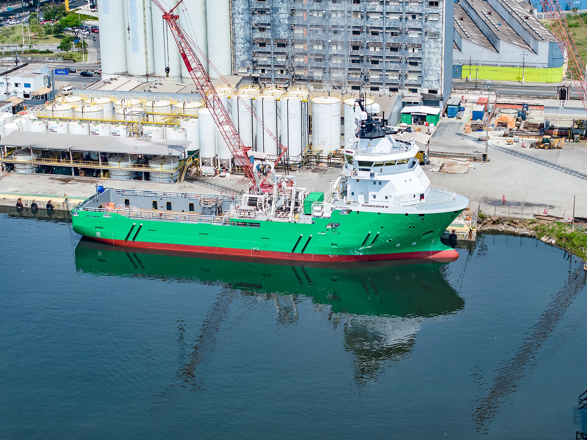
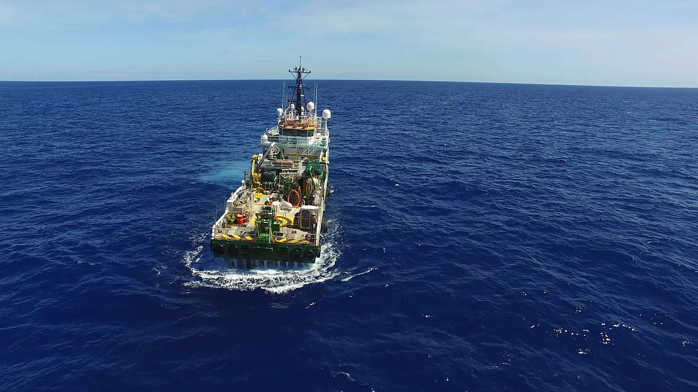

OceânicaEngenharia offshore e subsea · desde 1978
Role para recuar ↓
Oceanicasub XI · RSV
O que você viu primeiro era o reflexo
02 / 04
Quanto mais longe, maior.Quanto mais
longe, maior.
Uma de 18 embarcações · RI, release 1T26, 13/05/2026
O site lista 11 · validar antes de publicar
02 — Escala ↓